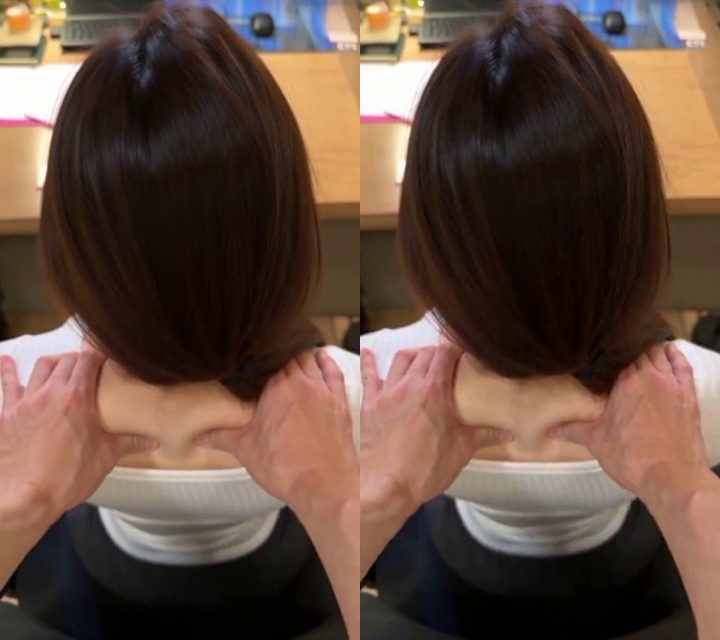
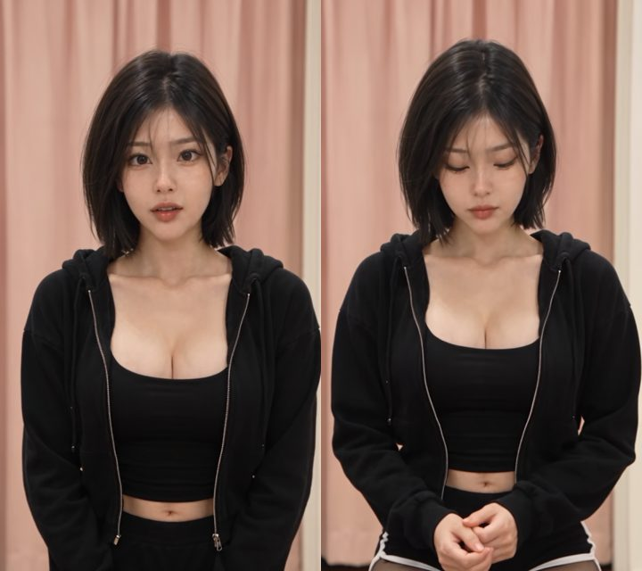
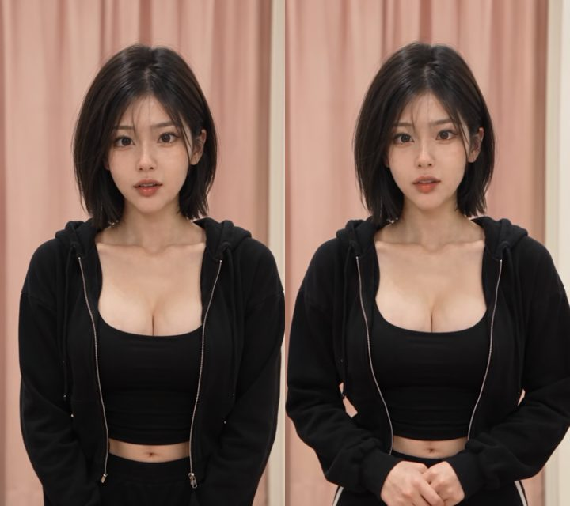

시댄스 「시작 화면 + 인물 앵커」 이음매 비교
앞 편 마지막 프레임을 시작 화면(start_image)으로, 인물 앵커를 참조(image_references)로 넣어 다음 편을 새로 생성한 경우 · 영상은 앞 편 마지막 4초 → 다음 편 전체를 그대로 이어 붙임 · 이음매 차이 = 앞 편 마지막 프레임과 다음 편 첫 프레임의 픽셀 평균 차이(낮을수록 매끄러움)
① 한정숙 씬 2 — 몰입 1 d11 → idle 2 d3
이음매 차이
12.4

왼쪽 = 앞 편 마지막 · 오른쪽 = 다음 편 첫 프레임
시작 화면 원본 480p · 앵커 + 목소리 참조 · 10초 · 첫 문장 「Image 1 is the first frame … staying exactly where it is in Image 1」 · 첫 구간 「From the first frame …」 · 끝을 시작 화면으로 돌려보내는 문장 없음
② 송채아 씬 1 — 진입 d4 → idle 1-1 d1
이음매 차이
27.4

왼쪽 = 앞 편 마지막 · 오른쪽 = 다음 편 첫 프레임
시작 화면 2K 확대 · 앵커 · 15초 · 「Follow Image 1 only for her place, pose and the space」(느슨하게) · 0초부터 눈을 내린 다른 상태 · 끝에 「첫 프레임 자세로 돌아옴」
③ 송채아 씬 1 — 진입 d4 → idle 1-1 d2 (한정숙 방식으로 고침)
이음매 차이
21.2

왼쪽 = 앞 편 마지막 · 오른쪽 = 다음 편 첫 프레임
시작 화면 원본 480p · 앵커 · 15초 · 「staying exactly where it is in Image 1」 · 「From the first frame」 · 끝에 「첫 프레임 자세로 돌아옴」은 그대로 → 끝 프레임이 오히려 시작 화면에 더 가까움(17.1)
정리
| 한정숙 d3 | 채아 d1 | 채아 d2 | |
|---|---|---|---|
| 이음매 | 12.4 | 27.4 | 21.2 |
| 넣은 칸 | start_image + 앵커 + 목소리 | start_image + 앵커 | start_image + 앵커 |
| 길이 | 10초 | 15초 | 15초 |
| 끝 문장 | 시작 화면으로 안 돌려보냄 | 첫 프레임 자세로 돌아옴 | 첫 프레임 자세로 돌아옴 |
| 구도 | 뒤에서 내려다보는 고정 | 정면 가슴 위 | 정면 가슴 위 |
넣는 칸은 같음. 차이 후보: 끝을 시작 화면으로 돌려보내는 문장(엔진이 그 그림을 끝에 맞춤) · 길이 10 vs 15초 · 구도(정면 인물은 엔진이 조금 물러나 잡음 — 추정)